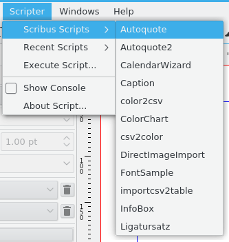

This is the description how to use the Scripting Plugin for Scribus. The scripter allows you to use the powerful Python Language as a scripting language in Scribus. This can allow you to automate otherwise repetitive tasks among other features.
This manual is the first version, by no means complete or fully accurate. Addtions to the scripter are made frequently, so a short note to the mailing list is in order ifyou have questions.
There are some simple example scripts in the samples subdirectory where Scribus is installed. If you have created scripts which would be useful for other users, please feel free to upload it to www.scribus.net or mail mrdocs at scribus.info with an attachment. We hope to add a plug-in gallery to the main website in the future.
|  |
To execute a Python Script select "Script->Execute Script..." Scribus will display a File select Box which allows you to select a Python Script. Below that, there is a menu item "Recent Scripts" where the most recently run scripts are listed. The number listed depends on your preferences setting.
You can use many Python modules with this Plugin. The only exception are scripts who expect parameters from the command Line. They won't work because the plugin gives the Python interpreter an empty command line.
The menu item "Show Console" gives you an interactive Python console, where you can execute commands directly. There is no need to do a "from scribus import *", this has already been done. You can use all the following commands in the Scripter API section directly without any prefix.
You can findsome useful information about any script calling "Script->About Script...".
You can display the full Scripter reference manual when you select "Help->Scripter Manual...".